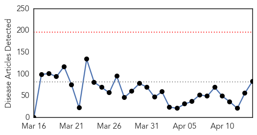
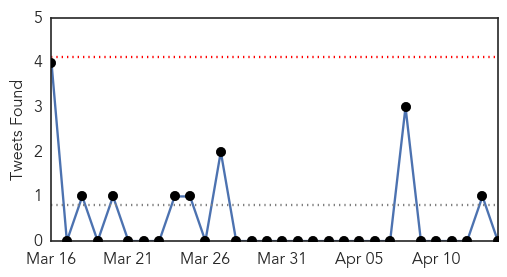
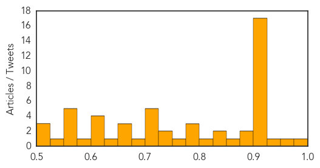

Ebola
30-Day Web Trend
0 alerts, 0 warnings

30-Day Twitter Trend
0 alerts, 0 warnings

Article Locations

Article Confidences

Top Articles:
- 1.000
- Testing of Ebola vaccine is underway in Sierra Leone
- 1.000
- Northland DHB doctor returns from midst of Ebola
- 1.000
- Ebola Vaccine Starts Testing in Sierra Leone
- 0.999
- Ebola 'no deadlier than it was 40 years ago'
- 0.998
- Nicaragua quarantines US embassy staffer over Ebola fears -The Tico Times
- 0.998
- Ebola Analysis Finds Virus Hasn’t Become Deadlier, Yet
- 0.998
- Nicaragua quarantines US embassy staffer over Ebola fears
- 0.997
- Take Ebola man, Nicaragua tells US - World News
- 0.997
- U.S. to Help in Launching African CDC -- Occupational Health & Safety
- 0.997
- Third trial underway for Ebola vaccine designed in Winnipeg - Winnipeg
- 0.997
- Ebola Virus Evolving, But Isn't Getting Deadlier, Study Says
- 0.996
- Lessons learned after Ebola
- 0.995
- Cuba Praises Medics Who Tackled Ebola Outbreak in West Africa
- 0.995
- Remove 'Ebola man', Nicaragua tells US
- 0.995
- Pros and cons of Sierra Leone ebola lockdowns
- 0.994
- Liberian boy, 10, has diagnosis of malaria
- 0.994
- 14/04/2015: Ebola outbreak: How will the world respond to the next epidemic?
- 0.993
- Homeland Security News Wire
- 0.993
- Sierra Leone: How Ebola Forces Doctors to Turn Away Pregnant Patients
- 0.989
- CDC: Ebola Vaccine Trial to Begin in Sierra Leone
- 0.989
- Ebola concerns lead Nicaragua to quarantine US embassy worker
- 0.988
- Sierra Leone schools reopen after long closure due to Ebola
- 0.988
- Ebola-hit Sierra Leone goes back to school
- 0.988
- Sierra Leone goes back to school
- 0.988
- Thousands of Sierra Leone schools reopen
- 0.987
- Sierra Leone schools re-open after Ebola closed for 9 months
- 0.986
- Sierra Leone schools reopen after long closure due to Ebola
- 0.986
- US backs plan for African center for disease control
- 0.985
- Sierra Leone schools re-open after Ebola closed for 9 months
- 0.985
- Schools Reopen In Sierra Leone As Ebola Threat Recedes
- 0.984
- Schools reopen in Sierra Leone as Ebola threat recedes
- 0.981
- Ebola: Schools Reopen In Sierra Leone As Threat Declines
- 0.977
- Sierra Leone children finally heading back to school
- 0.976
- No Ebola In Lagos —LASG
- 0.975
- Ebola-hit Sierra Leone goes back to school
- 0.975
- News, Sports, Jobs, Community Information - Parkersburg News and Sentinel
- 0.975
- Hunting Ebola in Freetown: A day in the life of an epidemiologist
- 0.974
- Nicaragua Wants Possibly Infected US Embassy Worker Removed
- 0.974
- US Embassy in Nicaragua denies staffer was in contact with Ebola - Inside Costa Rica
- 0.973
- Ebola-hit Sierra Leone goes back to school (Update)
- 0.968
- Canberra woman cleared of Ebola after return from west Africa
- 0.968
- Sierra Leone schools reopen as Ebola scare subsides
- 0.966
- Is Ebola More Deadly Than It Was 40 Years Ago?
- 0.961
- In Sierra Leone, hopes of saving the school year
- 0.957
- My daughter and I survived Ebola. This is our story.
- 0.955
- Ebola-hit Sierra Leone goes back to school - Major step in the normalisation of life in Sierra Leone - Kuwait Times
- 0.951
- Sierra Leone News : Prince Of Peace Ministry International Donates Anti-Ebola Materials To Vulnerable Children: Sierra Leone News
- 0.950
- Weaknesses Identified in Infectious Disease Prediction Models
- 0.950
- FDA modifies partial clinical hold on TKM-Ebola IND
- 0.946
- S. Leone students back to school after yearlong hiatus
Showing top 50 articles...
Top Tweets:
- 0.993
- Ebola analysis finds virus hasn't become deadlier, yet - Medical Xpress http://t.co/WXD5W9Ks36 ebola EVD
- 0.985
- Liberia succeeds in fighting Ebola with local, sector response - World Health Organization http://t.co/LY8yxXXnTv ebola EVD
- 0.935
- Ebola virus 'no deadlier than it was 40 years ago,' say researchers - Medical News Today http://t.co/Lm9LqdFGRP ebola EVD
- 0.921
- Sierra Leone Schools Re-Open After Ebola Closed for 9 Months - ABC News http://t.co/CAzmPlOMnL ebola EVD
- 0.916
- Will vaccine bring new hope in fight against Ebola? STRIVE Ebola vaccine trial starts in Sierra Leone. http://t.co/RCwlSMdNEx
- 0.895
- .@cdc.gov finally starts vaccinating in Ebola vaccine trial in Sierra Leone. Disease incidence there is very low now.
- 0.837
- Carrizo Springs veteran tests negative for Ebola virus - http://t.co/1xBN2ExDkG http://t.co/SVnpQAfyIv ebola EVD
- 0.834
- Scottish man tests 'negative' for Ebola - BBC News http://t.co/RfT8RBA0HG ebola EVD
- 0.799
- AFD blog `CDC: Sierra Leone Ebola Vaccine Trial Begins' http://t.co/7rfittolZH
- 0.772
- RT: Schools in SierraLeone reopen today after 8-months closure due to the Ebola outbreak. BACK2SCHOOLSL http://t.co/MIkT7nN3PL
- 0.762
- Duke researchers: Ebola stigma like AIDS hysteria - Durham Herald Sun http://t.co/h1lbJzuGzB ebola EVD
- 0.740
- News pouch on avianflu avianinfluenza Ebola EbolaResponse MERS Here: http://t.co/cFRMzseAcV
- 0.731
- Reforming WHO After Ebola | @JAMA_current http://t.co/ZvA82ariBb
- 0.727
- Liberia: The current Ebola situation and where the EbolaResponse stands now https://t.co/vVpwLhgpkO
- 0.713
- Laredo Medical Center experiences Ebola scare - http://t.co/1xBN2ExDkG http://t.co/SpqGNbLcd8 ebola EVD
- 0.685
- Lisa Denney takes a candid look at what the future holds for Sierra Leone as the Ebola outbreak is contained: http://t.co/ZTsvRwJpWy
- 0.681
- .@WorldBank reports almost 900 HCWs have contracted Ebola while caring 4 patients in Guinea, Liberia & Sierra Leon http://t.co/6zXiLVaUE1
- 0.673
- Ebola outbreak: How will the world respond to the next epidemic? http://t.co/9fWmsMfniE
- 0.655
- Nicaragua quarantines US embassy man over Ebola and requests removal - BBC News http://t.co/liCQgHQLLd ebola EVD
- 0.637
- Liberia watchdog says some Ebola funds unaccounted for:... http://t.co/pby1KpOplz
- 0.635
- RT: I'm quoted in's piece: Testing of Ebola vaccine is underway in Sierra Leone http://t.co/pXTW1kZ0Wg
- 0.615
- My daughter and I survived Ebola. This is our story. - International Federation of Red Cross and R... http://t.co/u4Ab4TP01e ebola EVD
- 0.595
- SierraLeone reopens schools after 9-month closure due to Ebola back2school http://t.co/rOd4OC5J0b
- 0.594
- 4 Myths About Ebola Recovery in West Africa, via http://t.co/JSMvFNskBU
- 0.580
- RT: Terrific work, @sherifink: Safety lapses at Sierra Leonean Ebola unit where Partners in Health worker was infected. ht…
- 0.564
- RT: Magbanamati, Sierra Leone: this woman is tackling Ebola food insecurity communityheros http://t.co/Hroc1N02gA http://t.c…
- 0.560
- More than 600 monitored in N.J. since October for Ebola fears - http://t.co/gJHXqVCkAv http://t.co/wvUmUAPAUf ebola EVD
- 0.552
- NJ. Ebola tally: More than 600 quarantined at home since October - http://t.co/gJHXqVkJbV http://t.co/ibu3Vs5Kuf ebola EVD
- 0.543
- STRIVE Ebola vaccine trial starts. http://t.co/zR08FP59nN CDC proud to partner w/ Sierra Leone on this important study.
Unknown
30-Day Web Trend
0 alerts, 0 warnings

30-Day Twitter Trend
0 alerts, 0 warnings

Article Locations

Article Confidences
Top Articles:
- 0.992
- WHO: Several factors fueling surge of H5N1 in Egypt
- 0.954
- WHO Donor Appeal for Yemen - 14 April 2015 - Yemen
- 0.926
- Lawyers called in to represent those hit by norovirus outbreak at Exeter’s Toby Carvery
- 0.917
- Chicago Tribune
- 0.917
- Chicago Tribune
- 0.917
- Chicago Tribune
- 0.917
- Chicago Tribune
- 0.917
- Chicago Tribune
- 0.917
- Chicago Tribune
- 0.917
- Chicago Tribune
- 0.917
- Chicago Tribune
- 0.917
- Chicago Tribune
- 0.917
- Chicago Tribune
- 0.917
- Chicago Tribune
- 0.917
- Chicago Tribune
- 0.917
- Chicago Tribune
- 0.917
- Chicago Tribune
- 0.917
- Chicago Tribune
- 0.917
- Chicago Tribune
- 0.917
- Chicago Tribune
- 0.900
- Wandtv.com, NewsCenter17, StormCenter17, Central Illinois News-
- 0.875
- Four more test positive for Tuberculosis infection at Olathe Northwest High School
- 0.866
- Papal iPad goes under the hammer in Uruguay
- 0.840
- Spring brings worries over hantavirus
- 0.829
- Chicago Dog Flu Outbreak Likely Started in Asia
- 0.821
- Physical Plant Department recognizes need for water safety program at UNM
- 0.792
- Four More At Olathe Northwest High School Test Positive For TB
- 0.781
- Taking a bite out of Lyme disease
- 0.780
- UPDATE 2-U.S. finds 1st case of lethal bird flu in commercial chicken flock
- 0.758
- Yemen: WHO appeals for funding to address increasing health needs in Yemen
- 0.748
- Protect yourself from Powassan virus, Lyme disease
- 0.728
- Flu vaccines underway in Southland
- 0.720
- The link between thimerosal-laced vaccines and childhood autism, funding for community health centers
- 0.719
- An additional four people test positive for TB infection at Olathe Northwest
- 0.712
- Senator to speak at Lyme disease film screening
- 0.707
- Deadly tick-borne Powassan virus being eyed by N.J. health officials
- 0.706
- New Tick-Borne Virus, How Dangerous? - Story
- 0.699
- DHFS says all Blue Bell products recalled from main campus
- 0.665
- New Mexico duck tests positive for bird flu
- 0.659
- Prevention of Periprosthetic Joint Infection: Pre- and Intraoperative Considerations
- 0.658
- WHO donates ambulances and vehicles at World Health Day commemoration in South Sudan - South Sudan
- 0.641
- Ministry of Public Health attends preparatory meeting for African Health Ministers Conference
- 0.622
- Telangana government confirms first bird flu outbreak in Thorrur
- 0.621
- Yemen crisis 'getting worse by the hour' – UN humanitarian official
- 0.621
- Jajarkot disease claims four, toll reaches 16
- 0.610
- Stopping Women’s Next Biggest Killer
- 0.593
- All about Mycoplasma from Arizona DHIA
- 0.574
- Increase Seen in Data Breaches of Health Information
- 0.569
- More than 200 passengers on two cruise ships stricken with possible norovirus
- 0.558
- 200 People Aboard Celebrity Cruise and Royal Caribbean Cruise Lines Fall Ill To Norovirus
Showing top 50 articles...
Top Tweets:
-
No tweets found for Apr 14, 2015